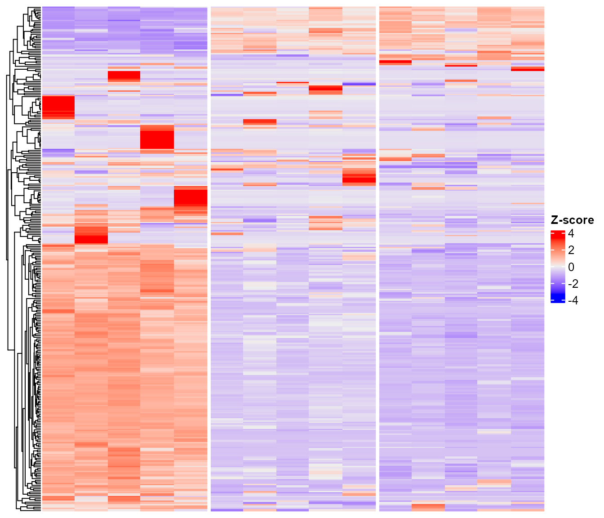
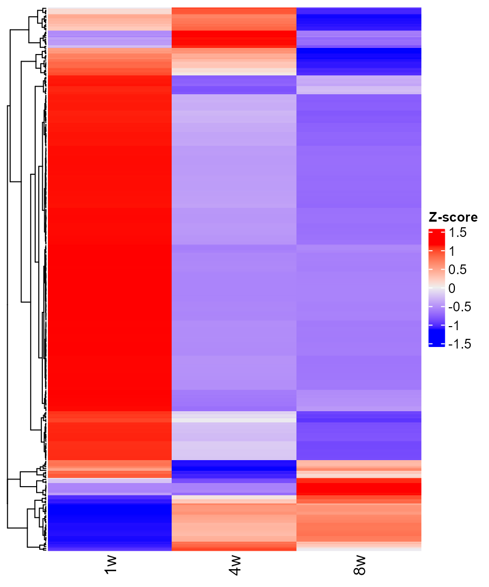
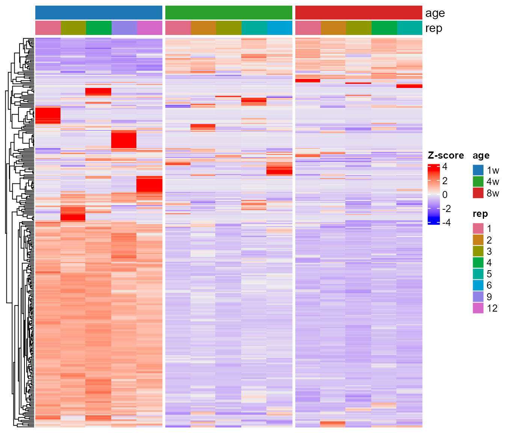
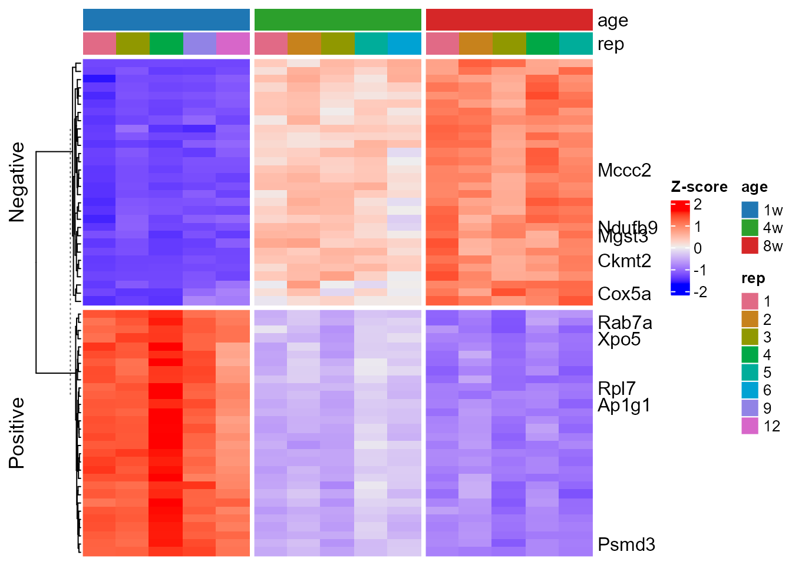
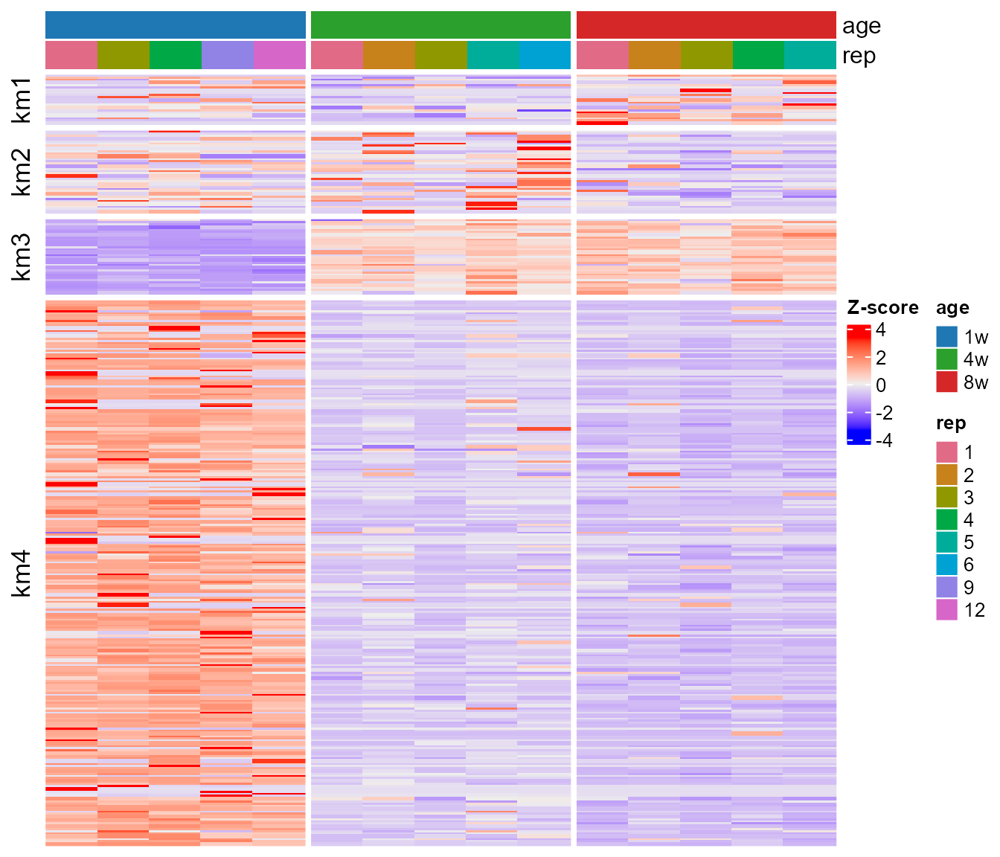
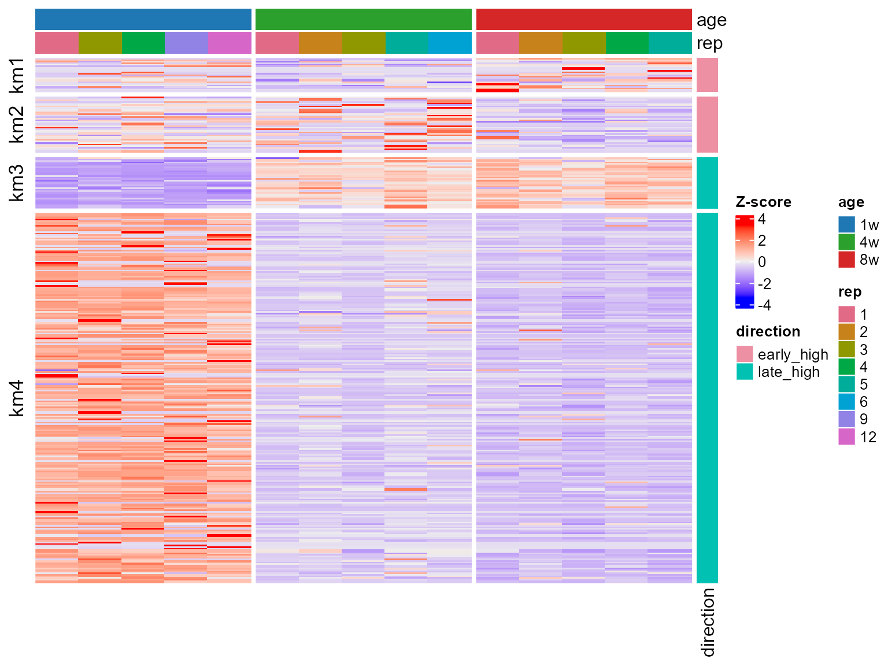
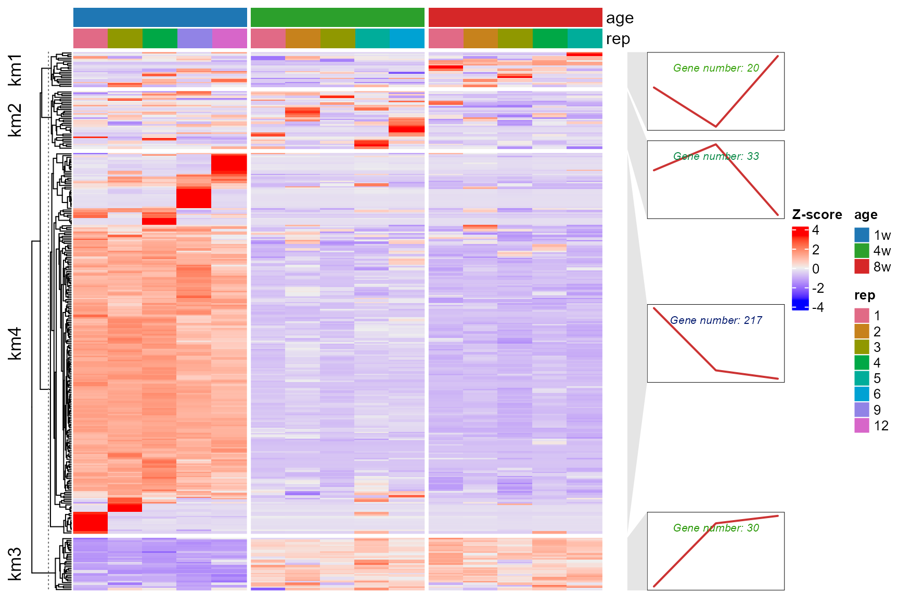
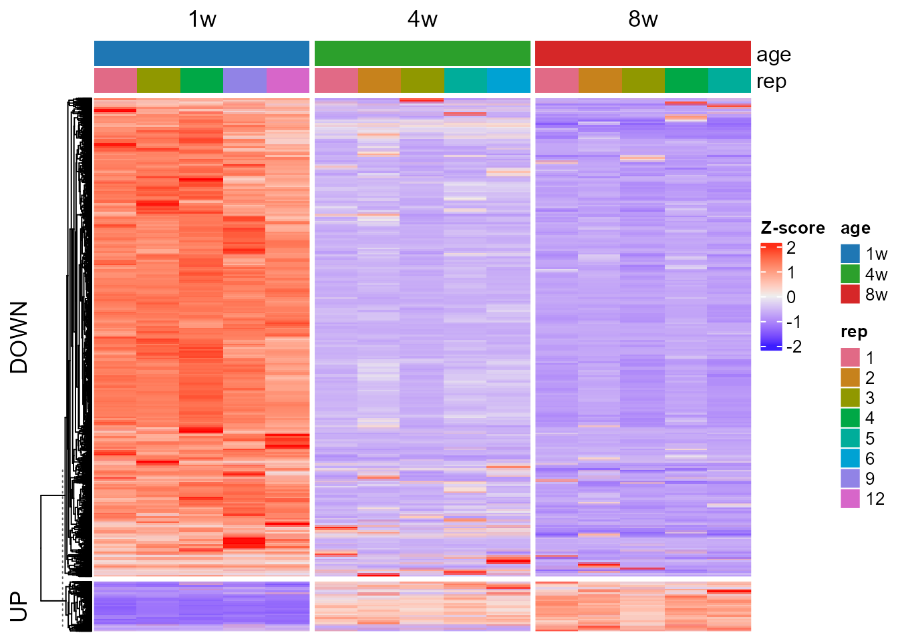

ComplexHeatmap Visualization with EasyProtein
Source:vignettes/complexheatmap_visualization.Rmd
complexheatmap_visualization.Rmd
suppressPackageStartupMessages({
library(EasyProtein)
library(tidyverse)
library(SummarizedExperiment)
library(ComplexHeatmap)
})
#> Warning: package 'ggplot2' was built under R version 4.4.3ComplexHeatmap Visualization with EasyProtein
1. Tutorial metadata
- Tutorial name: ComplexHeatmap Visualization with EasyProtein
- Tutorial type: Heatmap-focused workflow
- Target audience: Users who already have EasyProtein-preprocessed proteomics data
-
Primary goal: Show how to turn an EasyProtein
SummarizedExperimentobject into several common ComplexHeatmap visualizations -
Expected outcome: You will learn how to:
- load data with
rawdata2se() - build sample-level and condition-level heatmap matrices
- select protein subsets from PCA or user-defined gene lists
- add column and row annotations
- split rows by unsupervised clusters
- use
plot_heatmap_withline()for cluster-level trend summaries - export heatmaps with
saveplot()
- load data with
2. Load example data and build
SummarizedExperiment
This tutorial uses the example file shipped with EasyProtein. In a
real analysis, replace exp_file with your own
EasyProtein-compatible protein matrix, then keep the downstream code
unchanged.
exp_file <- system.file(
"extdata",
"mouse_multi-organ_DIA_report.pg_matrix.tsv.gz",
package = "EasyProtein"
)
stopifnot(file.exists(exp_file))
se_obj <- rawdata2se(exp_file)
#> [rawdata2se] Reading input took 1.32 seconds
#> [rawdata2se] Detecting raw columns took 0.00 seconds
#> [rawdata2se] Preprocessing took 3.12 seconds
#> [rawdata2se] Missing-value filtering took 132.38 seconds
#> [rawdata2se] Stability filtering took 3.43 seconds
#> [rawdata2se] Imputation took 11.69 seconds
#> [rawdata2se] Building SummarizedExperiment took 2.52 seconds
#> [rawdata2se] Done took 0.00 seconds
se <- se_obj$se
se
#> class: SummarizedExperiment
#> dim: 11556 299
#> metadata(0):
#> assays(4): raw_intensity intensity conc zscale
#> rownames(11556): 0610012G03Rik 1700010I14Rik ... unknown8 unknown9
#> rowData names(1): gene
#> colnames(299): brain_1w_F_5 brain_1w_F_7 ... Muscle8w_M_4 Muscle8w_M_5
#> colData names(4): sample condition rep group3. Add sample metadata
ComplexHeatmap becomes most useful when the columns can be split or
annotated by biological variables. Here we derive tissue,
age, and sex from the example
condition column, following the same data preparation used
in the quick start and multi-sample tutorials.
se$tissue <- stringr::str_extract(se$condition, "[A-Za-z]+")
se$age <- stringr::str_extract(se$condition, "\\dw")
se$sex <- stringr::str_extract(se$condition, "\\w$")
sample_table <- as.data.frame(SummarizedExperiment::colData(se)) %>%
dplyr::select(sample, condition, rep, tissue, age, sex)
head(sample_table, 10)
#> sample condition rep tissue age sex
#> brain_1w_F_5 brain_1w_F_5 brain_1w_F 5 brain 1w F
#> brain_1w_F_7 brain_1w_F_7 brain_1w_F 7 brain 1w F
#> brain_1w_F_8 brain_1w_F_8 brain_1w_F 8 brain 1w F
#> brain_1w_F_10 brain_1w_F_10 brain_1w_F 10 brain 1w F
#> brain_1w_M_1 brain_1w_M_1 brain_1w_M 1 brain 1w M
#> brain_1w_M_3 brain_1w_M_3 brain_1w_M 3 brain 1w M
#> brain_1w_M_4 brain_1w_M_4 brain_1w_M 4 brain 1w M
#> brain_1w_M_7 brain_1w_M_7 brain_1w_M 7 brain 1w M
#> brain_1w_M_12 brain_1w_M_12 brain_1w_M 12 brain 1w M
#> brain_4w_F_1 brain_4w_F_1 brain_4w_F 1 brain 4w FFor compact figures, we focus on one coherent subset: male heart samples across three ages. This keeps the biological interpretation simple while preserving replicate-level structure.
se_focus <- se[, se$tissue == "heart" & se$sex == "M"]
se_focus$age <- factor(se_focus$age, levels = c("1w", "4w", "8w"))
se_focus$condition <- factor(se_focus$condition, levels = unique(se_focus$condition))
rep_levels <- unique(as.character(se_focus$rep))
rep_numeric <- suppressWarnings(as.numeric(rep_levels))
if (all(!is.na(rep_numeric))) {
rep_levels <- rep_levels[order(rep_numeric)]
} else {
rep_levels <- sort(rep_levels)
}
se_focus$rep <- factor(se_focus$rep, levels = rep_levels)
as.data.frame(SummarizedExperiment::colData(se_focus)) %>%
dplyr::select(sample, condition, rep, tissue, age, sex)
#> sample condition rep tissue age sex
#> heart_1w_M_1 heart_1w_M_1 heart_1w_M 1 heart 1w M
#> heart_1w_M_3 heart_1w_M_3 heart_1w_M 3 heart 1w M
#> heart_1w_M_4 heart_1w_M_4 heart_1w_M 4 heart 1w M
#> heart_1w_M_9 heart_1w_M_9 heart_1w_M 9 heart 1w M
#> heart_1w_M_12 heart_1w_M_12 heart_1w_M 12 heart 1w M
#> heart_4w_M_1 heart_4w_M_1 heart_4w_M 1 heart 4w M
#> heart_4w_M_2 heart_4w_M_2 heart_4w_M 2 heart 4w M
#> heart_4w_M_3 heart_4w_M_3 heart_4w_M 3 heart 4w M
#> heart_4w_M_5 heart_4w_M_5 heart_4w_M 5 heart 4w M
#> heart_4w_M_6 heart_4w_M_6 heart_4w_M 6 heart 4w M
#> heart_8w_M_1 heart_8w_M_1 heart_8w_M 1 heart 8w M
#> heart_8w_M_2 heart_8w_M_2 heart_8w_M 2 heart 8w M
#> heart_8w_M_3 heart_8w_M_3 heart_8w_M 3 heart 8w M
#> heart_8w_M_4 heart_8w_M_4 heart_8w_M 4 heart 8w M
#> heart_8w_M_5 heart_8w_M_5 heart_8w_M 5 heart 8w M4. Build heatmap matrices from EasyProtein objects
EasyProtein stores several assays in the
SummarizedExperiment object. For heatmaps, two views are
especially common:
- sample-level matrix: one column per biological replicate
- condition-level matrix: one column per condition, usually the mean or median across replicates
For visual stability, the examples below select the top variable proteins instead of plotting every detected protein in the vignette.
z_df <- se2scale(se_focus, rescale = TRUE)
z_mtx <- as.matrix(z_df[, colnames(se_focus), drop = FALSE])
rownames(z_mtx) <- rownames(se_focus)
z_mtx[!is.finite(z_mtx)] <- 0
top_n <- min(300, nrow(z_mtx))
row_var <- matrixStats::rowVars(z_mtx)
names(row_var) <- rownames(z_mtx)
top_variable_genes <- names(sort(row_var, decreasing = TRUE))[seq_len(top_n)]
z_top <- z_mtx[top_variable_genes, , drop = FALSE]
condition_mean_mtx <- calc_gene_mean_by_condition(
se = se_focus,
assay_name = "conc",
method = "mean",
condition_col = "age"
)
condition_mean_z <- scale_mtx(condition_mean_mtx)
condition_mean_z[!is.finite(condition_mean_z)] <- 0
condition_mean_top <- condition_mean_z[top_variable_genes, , drop = FALSE]
dim(z_top)
#> [1] 300 15
dim(condition_mean_top)
#> [1] 300 3If your input data contain duplicated gene symbols, keep row names as unique protein IDs for computation. You can still display gene symbols later by adding row annotations or by selecting representative rows after aggregation.
5. Sample-level heatmap
The first heatmap keeps biological replicates as separate columns. This view is useful for checking whether replicates behave consistently inside each age group.
ht_sample <- ComplexHeatmap::Heatmap(
z_top,
name = "Z-score",
cluster_rows = TRUE,
cluster_columns = FALSE,
show_row_names = FALSE,
show_column_names = FALSE,
column_split = se_focus$age,
column_title = NULL,
use_raster = TRUE
)
ht_sample
6. Condition-level heatmap
When the question is about the overall pattern across conditions, average the replicates first. This makes the heatmap smaller and easier to interpret.
ht_condition <- ComplexHeatmap::Heatmap(
condition_mean_top,
name = "Z-score",
cluster_rows = TRUE,
cluster_columns = FALSE,
show_row_names = FALSE,
show_column_names = TRUE,
column_title = NULL,
use_raster = TRUE
)
ht_condition
Use the sample-level heatmap to inspect replicate behavior. Use the condition-level heatmap to communicate the main biological trend.
7. Add column annotations
Column annotations make the experimental design explicit. The example below colors age groups and replicate numbers above the sample-level heatmap.
age_col <- c(
"1w" = "#1F77B4",
"4w" = "#2CA02C",
"8w" = "#D62728"
)
rep_levels <- levels(se_focus$rep)
rep_col <- setNames(
grDevices::hcl.colors(length(rep_levels), palette = "Dark 3"),
rep_levels
)
top_anno <- ComplexHeatmap::HeatmapAnnotation(
age = se_focus$age,
rep = se_focus$rep,
col = list(
age = age_col,
rep = rep_col
),
show_annotation_name = TRUE
)
ht_anno <- ComplexHeatmap::Heatmap(
z_top,
name = "Z-score",
cluster_rows = TRUE,
cluster_columns = FALSE,
show_row_names = FALSE,
show_column_names = FALSE,
top_annotation = top_anno,
column_split = se_focus$age,
column_title = NULL,
use_raster = TRUE
)
ht_anno
8. Heatmap for selected proteins
You often do not want an unsupervised heatmap of all proteins. Instead, select proteins from a biological hypothesis, PCA contributors, DEG results, or any custom gene list.
8.1 Select proteins from PCA contributors
This example identifies proteins that contribute strongly to PC1 and draws a focused heatmap. Positive and negative contributors are used as row splits.
conc_mtx <- SummarizedExperiment::assay(se_focus, "conc")
pca_res <- FactoMineR::PCA(t(conc_mtx), scale.unit = TRUE, graph = FALSE)
pc1_genes <- dplyr::bind_rows(
get_pc_contributors(pca_res, se_focus, pc = 1, n = 30)$positive,
get_pc_contributors(pca_res, se_focus, pc = 1, n = 30)$negative
) %>%
dplyr::filter(gene %in% rownames(z_mtx)) %>%
dplyr::distinct(gene, .keep_all = TRUE)
pc1_label_genes <- pc1_genes %>%
dplyr::group_by(type) %>%
dplyr::slice_head(n = 5) %>%
dplyr::ungroup() %>%
dplyr::pull(gene)
head(pc1_genes)
#> gene value type
#> 1 Rpl7 0.9931828 Positive
#> 2 Xpo5 0.9922783 Positive
#> 3 Rab7a 0.9910809 Positive
#> 4 Psmd3 0.9906672 Positive
#> 5 Ap1g1 0.9904143 Positive
#> 6 Polr2j 0.9900570 Positive
pc1_mtx <- z_mtx[pc1_genes$gene, , drop = FALSE]
pc1_row_labels <- ifelse(rownames(pc1_mtx) %in% pc1_label_genes, rownames(pc1_mtx), "")
ht_pc1 <- ComplexHeatmap::Heatmap(
pc1_mtx,
name = "Z-score",
cluster_rows = TRUE,
cluster_columns = FALSE,
row_split = pc1_genes$type,
show_row_names = TRUE,
row_labels = pc1_row_labels,
show_column_names = FALSE,
top_annotation = top_anno,
column_split = se_focus$age,
column_title = NULL,
use_raster = TRUE
)
ht_pc1
8.2 Select proteins from a custom gene list
For user-defined markers, keep only genes found in the matrix. The same pattern works for lists imported from CSV, Excel, enrichment results, or manual curation.
target_genes <- c("Actb", "Gapdh", "Myh6")
target_genes <- intersect(target_genes, rownames(z_mtx))
ht_targets <- ComplexHeatmap::Heatmap(
z_mtx[target_genes, , drop = FALSE],
name = "Z-score",
cluster_rows = TRUE,
cluster_columns = FALSE,
show_row_names = TRUE,
show_column_names = FALSE,
top_annotation = top_anno,
column_split = se_focus$age,
column_title = NULL
)
ht_targets9. Unsupervised row clustering
For exploratory analysis, cluster the condition-level matrix first, then use the cluster assignment to split rows in the replicate-level heatmap.
set.seed(1)
k <- 4
km <- stats::kmeans(condition_mean_top, centers = k, nstart = 20)
row_cluster_df <- tibble::tibble(
gene = rownames(condition_mean_top),
km_cluster = paste0("km", km$cluster)
) %>%
dplyr::arrange(km_cluster)
head(row_cluster_df)
#> # A tibble: 6 × 2
#> gene km_cluster
#> <chr> <chr>
#> 1 Ankrd49 km1
#> 2 Aspdh km1
#> 3 Bsdc1 km1
#> 4 Cit km1
#> 5 Clcn5 km1
#> 6 Cmtm6 km1
cluster_genes <- row_cluster_df$gene
ht_cluster <- ComplexHeatmap::Heatmap(
z_mtx[cluster_genes, , drop = FALSE],
name = "Z-score",
cluster_rows = FALSE,
cluster_columns = FALSE,
row_split = row_cluster_df$km_cluster,
show_row_names = FALSE,
show_column_names = FALSE,
top_annotation = top_anno,
column_split = se_focus$age,
column_title = NULL,
use_raster = TRUE
)
ht_cluster
The number of clusters should be chosen according to the biological question. Start with a small value such as 4 to 6, then inspect whether the resulting groups are interpretable.
9.1 Enrichment analysis for each k-means cluster
After the heatmap clusters are defined, each cluster can be treated
as a gene set for functional interpretation. The code below runs GO
enrichment for every km_cluster and prints the top terms
per cluster when clusterProfiler and the mouse annotation
database are available.
cluster_gene_list <- split(row_cluster_df$gene, row_cluster_df$km_cluster)
if (
requireNamespace("clusterProfiler", quietly = TRUE) &&
requireNamespace("org.Mm.eg.db", quietly = TRUE)
) {
km_go_list <- purrr::imap(cluster_gene_list, function(genes, cluster_name) {
genes <- unique(stats::na.omit(genes))
if (length(genes) < 5) {
return(NULL)
}
res <- tryCatch(
enrichment_analysis(
gene = genes,
db = "GO",
species = "mouse",
keyType = "SYMBOL",
qvalue_cutoff = 0.05
),
error = function(e) {
message(cluster_name, ": enrichment skipped - ", conditionMessage(e))
NULL
}
)
if (is.null(res) || nrow(res) == 0) {
return(NULL)
}
dplyr::mutate(as.data.frame(res), km_cluster = cluster_name, .before = 1)
})
km_go_df <- dplyr::bind_rows(km_go_list)
if (nrow(km_go_df) > 0) {
km_go_df %>%
dplyr::group_by(km_cluster) %>%
dplyr::slice_head(n = 5) %>%
dplyr::ungroup()
} else {
message("No enriched GO terms were found for the current k-means clusters.")
}
} else {
message("Install 'clusterProfiler' and 'org.Mm.eg.db' to run per-cluster GO enrichment.")
}
#>
#>
#> # A tibble: 19 × 14
#> km_cluster ONTOLOGY ID Description GeneRatio BgRatio RichFactor
#> <chr> <chr> <chr> <chr> <chr> <chr> <dbl>
#> 1 km1 MF GO:0016705 oxidoreductase a… 3/18 230/28… 0.0130
#> 2 km1 MF GO:0008392 arachidonic acid… 2/18 48/283… 0.0417
#> 3 km1 MF GO:0008391 arachidonic acid… 2/18 51/283… 0.0392
#> 4 km1 MF GO:0016712 oxidoreductase a… 2/18 80/283… 0.025
#> 5 km2 BP GO:0007009 plasma membrane … 4/33 169/28… 0.0237
#> 6 km2 BP GO:0006670 sphingosine meta… 2/33 20/289… 0.1
#> 7 km2 BP GO:0046519 sphingoid metabo… 2/33 22/289… 0.0909
#> 8 km2 CC GO:0030672 synaptic vesicle… 5/33 148/28… 0.0338
#> 9 km2 CC GO:0099501 exocytic vesicle… 5/33 148/28… 0.0338
#> 10 km3 BP GO:0015980 energy derivatio… 9/28 351/28… 0.0256
#> 11 km3 BP GO:0045333 cellular respira… 8/28 255/28… 0.0314
#> 12 km3 BP GO:0006091 generation of pr… 9/28 488/28… 0.0184
#> 13 km3 BP GO:0009060 aerobic respirat… 6/28 199/28… 0.0302
#> 14 km3 BP GO:0022904 respiratory elec… 5/28 105/28… 0.0476
#> 15 km4 BP GO:0006403 RNA localization 9/208 176/28… 0.0511
#> 16 km4 BP GO:0043161 proteasome-media… 13/208 394/28… 0.0330
#> 17 km4 BP GO:0050657 nucleic acid tra… 8/208 147/28… 0.0544
#> 18 km4 BP GO:0050658 RNA transport 8/208 147/28… 0.0544
#> 19 km4 BP GO:0051236 establishment of… 8/208 150/28… 0.0533
#> # ℹ 7 more variables: FoldEnrichment <dbl>, zScore <dbl>, pvalue <dbl>,
#> # p.adjust <dbl>, qvalue <dbl>, geneID <chr>, Count <int>10. Add row annotations
Row annotations are useful when you have feature-level labels such as protein class, DEG direction, pathway membership, or cluster identity.
row_cluster_df <- row_cluster_df %>%
dplyr::mutate(direction = ifelse(km_cluster %in% c("km1", "km2"), "early_high", "late_high"))
direction_levels <- unique(row_cluster_df$direction)
direction_col <- setNames(
grDevices::hcl.colors(length(direction_levels), palette = "Set 2"),
direction_levels
)
right_anno <- ComplexHeatmap::rowAnnotation(
direction = row_cluster_df$direction,
col = list(direction = direction_col),
show_annotation_name = TRUE
)
ht_row_anno <- ComplexHeatmap::Heatmap(
z_mtx[row_cluster_df$gene, , drop = FALSE],
name = "Z-score",
cluster_rows = FALSE,
cluster_columns = FALSE,
row_split = row_cluster_df$km_cluster,
show_row_names = FALSE,
show_column_names = FALSE,
top_annotation = top_anno,
right_annotation = right_anno,
column_split = se_focus$age,
column_title = NULL,
use_raster = TRUE
)
ht_row_anno
In a real project, replace the toy direction labels with
actual annotations, for example DEGs_types, pathway class,
subcellular location, or cluster labels from a tissue-specific
clustering workflow such as the case study 1
assigned_tissue labels.
11. Cluster heatmap with trend summary lines
EasyProtein includes plot_heatmap_withline(), a
ComplexHeatmap wrapper that adds a right-side line panel for each row
cluster. This is useful when you want to show both the per-sample
heatmap and the average trend of each cluster.
ht_line <- plot_heatmap_withline(
mat = z_mtx[row_cluster_df$gene, colnames(se_focus), drop = FALSE],
row_split = row_cluster_df$km_cluster,
column_split = se_focus$age,
top_annotation = top_anno,
show_column_names = FALSE,
set.md = "mean"
)
ht_line
#> Warning in panel_fun(index[ind], names(align_to)[ai]): NAs introduced by
#> coercion
#> Warning in panel_fun(index[ind], names(align_to)[ai]): NAs introduced by
#> coercion
#> Warning in panel_fun(index[ind], names(align_to)[ai]): NAs introduced by
#> coercion
#> Warning in panel_fun(index[ind], names(align_to)[ai]): NAs introduced by
#> coercion
This plot is best used after you have a meaningful row grouping. The grouping can come from k-means, tissue-specific clustering, time-course clustering, DEG direction, pathway sets, or any manually curated protein class.
12. Export heatmaps
saveplot() can save ComplexHeatmap objects to the
standard EasyProtein figure folders. The code below is disabled during
vignette rendering so that package builds do not write output files.
saveplot(
object = ht_sample,
filenames = "sample_level_heatmap",
width = 4,
height = 4
)
saveplot(
object = ht_cluster,
filenames = "clustered_heatmap",
width = 5,
height = 5
)
saveplot(
object = ht_line,
filenames = "clustered_heatmap_with_trend_lines",
width = 6,
height = 4
)For publication figures, adjust width,
height, row names, annotation colors, and cluster numbers
after inspecting the first exported draft.
13. Practical templates
13.1 Use your own preprocessed EasyProtein object
se <- readRDS("Rds/my_easyprotein_se.rds")
se$condition <- factor(se$condition, levels = unique(se$condition))
z_df <- se2scale(se, rescale = TRUE)
z_mtx <- as.matrix(z_df[, colnames(se), drop = FALSE])
rownames(z_mtx) <- rownames(se)
z_mtx[!is.finite(z_mtx)] <- 0
row_var <- matrixStats::rowVars(z_mtx)
names(row_var) <- rownames(z_mtx)
top_n <- min(500, nrow(z_mtx))
top_genes <- names(sort(row_var, decreasing = TRUE))[seq_len(top_n)]
ComplexHeatmap::Heatmap(
z_mtx[top_genes, , drop = FALSE],
name = "Z-score",
cluster_rows = TRUE,
cluster_columns = FALSE,
column_split = se$condition,
show_row_names = FALSE,
show_column_names = FALSE,
use_raster = TRUE
)13.2 Aggregate duplicated gene symbols before plotting
Some proteomics reports contain multiple protein IDs for the same gene symbol. When you want a gene-level heatmap, aggregate the matrix before plotting.
scale_df <- se2scale(se, rescale = TRUE) %>%
dplyr::mutate(gene_symbol = stringr::str_extract(Genes, "^[^;]+")) %>%
dplyr::filter(!is.na(gene_symbol), gene_symbol != "") %>%
dplyr::group_by(gene_symbol) %>%
dplyr::summarise(
dplyr::across(dplyr::all_of(colnames(se)), mean, na.rm = TRUE),
.groups = "drop"
)
gene_z_mtx <- as.matrix(scale_df[, colnames(se), drop = FALSE])
rownames(gene_z_mtx) <- scale_df$gene_symbol13.3 Plot DEG proteins only
deg_res <- se2DEGs(
se = se_focus,
compare_col = "age",
ref = "1w",
cmp = "8w",
logFC_cutoff = 1,
adj_p_cutoff = 0.05
)
deg_genes <- deg_res %>%
dplyr::filter(DEGs_types %in% c("UP", "DOWN")) %>%
dplyr::pull(gene) %>%
unique()
deg_genes <- intersect(deg_genes, rownames(z_mtx))
if (length(deg_genes) == 0) {
deg_genes <- deg_res %>%
dplyr::arrange(adj.P.Val, dplyr::desc(abs(logFC))) %>%
dplyr::slice_head(n = 40) %>%
dplyr::pull(gene) %>%
intersect(rownames(z_mtx))
}
ht_deg <- ComplexHeatmap::Heatmap(
z_mtx[deg_genes, , drop = FALSE],
name = "Z-score",
row_split = deg_res$DEGs_types[match(deg_genes, deg_res$gene)],
cluster_rows = TRUE,
cluster_columns = FALSE,
column_split = se_focus$age,
top_annotation = top_anno,
show_row_names = FALSE,
show_column_names = FALSE
)
ht_deg
14. Recommended heatmap workflow
- Build
sewithrawdata2se()or load a saved EasyProteinSummarizedExperiment. - Add explicit metadata columns to
colData(se). - Use
se2scale()for sample-level z-score heatmaps. - Use
calc_gene_mean_by_condition()plusscale_mtx()for condition-level heatmaps. - Select a biologically meaningful feature set before fine-tuning aesthetics.
- Add
HeatmapAnnotation()androwAnnotation()only after the matrix and ordering are correct. - Use
plot_heatmap_withline()when row clusters need trend summaries. - Export final figures with
saveplot().